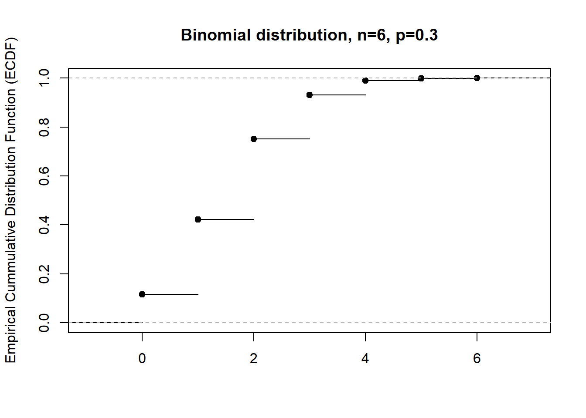
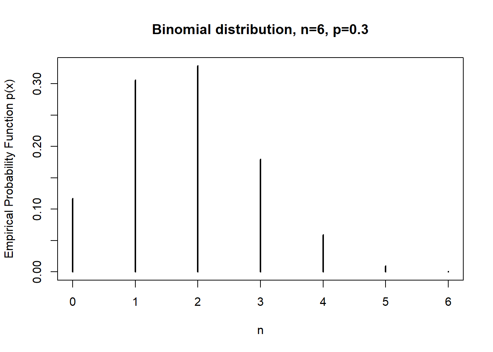

2 Distributional Quantities
2.1 Explorting the exponential distribution
The exponential density is given by \[ f(x) = \lambda \cdot e^{-\lambda \cdot x}.\]
- Use the R function
rexpto simulate 10000 observations from the exponential distribution with \(\lambda = 5\). Check the documentation to see which parametrization R is using.
# Check the documentation for rexp
?rexp
# In R the parameter `lambda` is called the `rate` parameter.
# The same parametrization as in this exercise is used.
data <- rexp(n = 10000, rate = 5) - Calculate the mean and standard deviation of the simulated sample
# Calculating the mean
mu = mean(data);
# For the exponential distribution the mean is given by 1 / lambda = 1 / 5 = 0.2
mu;## [1] 0.1994631# Calculating the standard deviation as the square root of the variance
sigma = sqrt(var(data))
# For the exponential distribution the standard deviation is given by 1 / lambda = 1 / 5 = 0.2
sigma;## [1] 0.1997074- Calculate the mean excess loss function \(e_X(d)\) for \(d = 1\).
# mean excess loss
# e_X(d) = E(X - d | X > d)
# We work conditionally, select the observations above 1:
conditionalData <- data[data > 1]
# Calculate the expected value of X-d using the observations above 1:
meanExcess <- mean(conditionalData - 1)
# Print result
meanExcess## [1] 0.214778- Calculate $E((X - d)_+) for \(d = 1\).
# (X - d)_+ = max(X-d, 0)
expectedValue = mean(pmax(data - 1, 0))
expectedValue## [1] 0.001331623- Calculate the \(95\%\) and \(99\%\) quantile from the simulated sample.
quantile(data, c(0.95, 0.99))## 95% 99%
## 0.5929910 0.90692542.2 Visualizing probability distributions
- simulate data from the binomial distriubtion and plot the empirical CDF and empirical PDF for this sample.
Usefull R commands:
ecdf: Calculates the empirical cdf from sampled data;table: Calculates the frequency of each observation in a sample;prop.table: Calculates the empirical probability of each outcome, starting from a table of frequencies.
Check the R documentation:
?ecdf
?table
?prop.table# Define properties of the simulation
nSim <- 10000
p <- 0.3
n <- 6
# generate 'nSim' obs. from Bin(n,p) distribution
dataBinom <- rbinom(nSim, n, p)
# Use the R command `ecdf` to plot the empirical cumulative distribution function
plot(ecdf(dataBinom),
main="Binomial distribution, n=6, p=0.3",
ylab="Empirical Cummulative Distribution Function (ECDF)",
xlab=" ") # ecdf
# Use prop.table(table( ... )) to calculate the percentage for each observation in the simulation.
plot(prop.table(table(dataBinom)),
main="Binomial distribution, n=6, p=0.3",
ylab="Empirical Probability Function p(x)",
xlab="n")